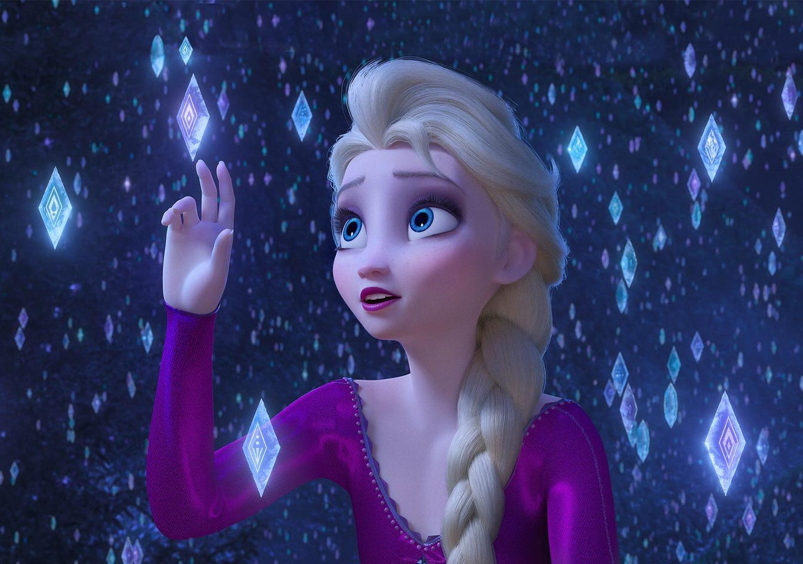

Hello! :)
얌밍이의
첫 '웹 페이지 만들기' ~ ~
INDEX
- SNOWBOARD
- FROZEN
- PROGRAMMING
-----------------------------------------------------
FROZEN
겨울왕국2!
내가 가장 좋아하는 애니메이션이자 영화이다.

영화관은 원래 그닥 좋아하지 않을 뿐더러
같은 영화를 두 번 이상 보는 것을 절대적으로 견뎌내지 못하는(?) 성격인데
어쩌다보니 영화관에서 5번이나 보게 되었다.
(최근에는 유튜브로 구매하여 틈틈이 보고있다.ㅋㅋㅋㅋ 방금도,, ㅎㅎ)

왜 그런진 나도 모르겠다. ㅎㅎ
그저
어딘가로 안주하고 싶은 마음이
이곳에서 잠깐이나마 위로받고 가게 되는 것 같다.
Into the unknown~~